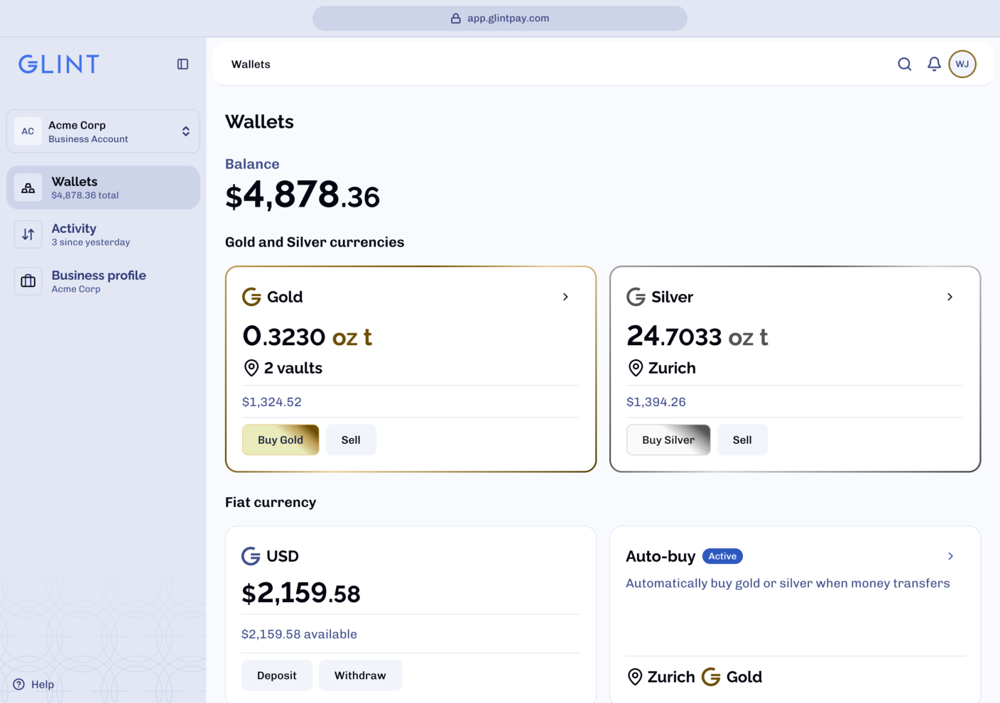
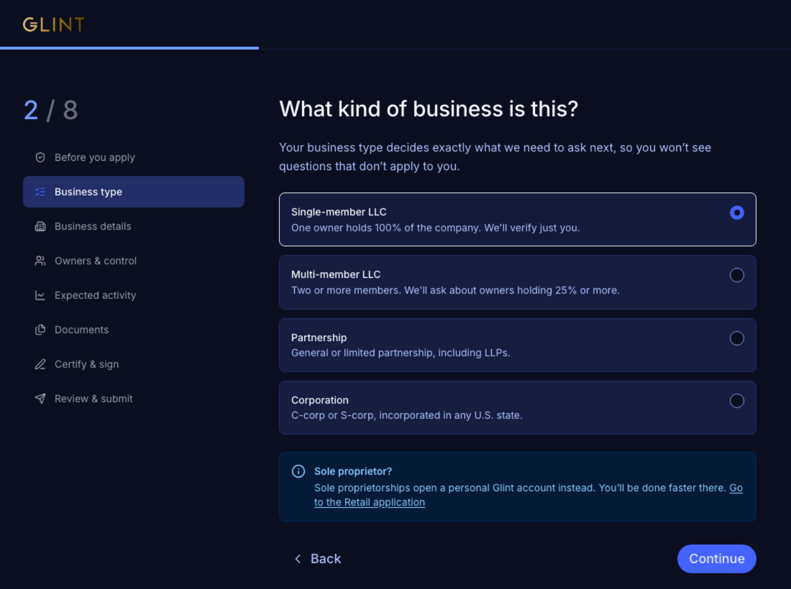
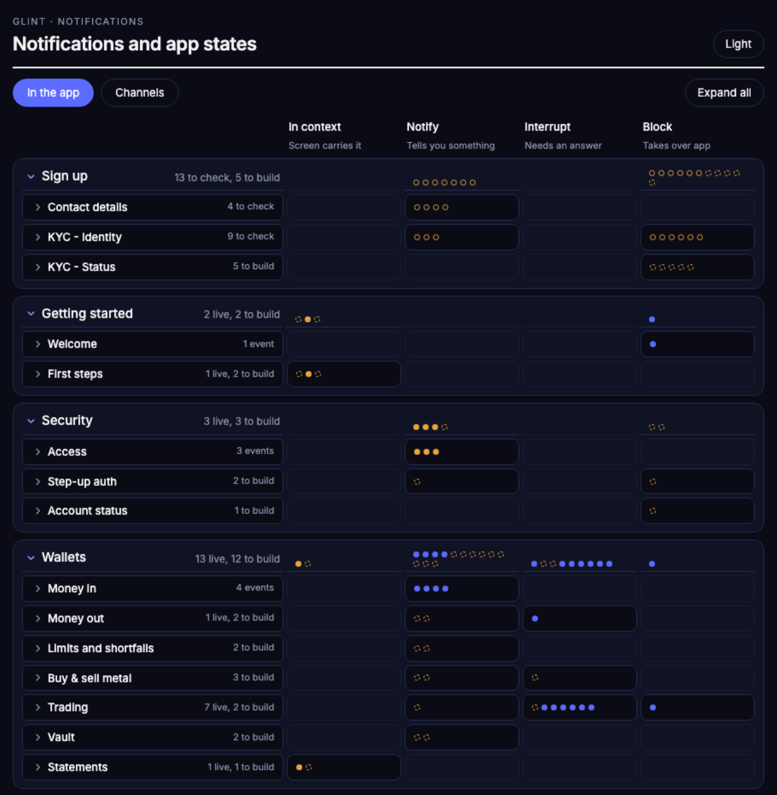

Design and prototyping for UK and US business accounts
Glint lets people and businesses save in physical gold and silver, and spend it anywhere with a Glint Mastercard. To open business accounts in the UK and US, it needed a credible product to show partners, onboarding that met US rules, and a framework for how its apps tell customers what is happening.
- Client
- Glint Pay
- Sector
- Fintech
- Period
- August – November 2026
- Role
- Product design and prototype consultant
Glint's head of engineering set out three needs. The first was a business web portal for UK and US accounts, good enough to show partners and support bids for US state contracts. The second was onboarding built from the compliance officer's data-capture specification. The third was a single framework for notifications across the apps.
Business portal, end to end
Built a working portal for UK and US businesses, from onboarding through buying, storing and selling gold and silver: dashboard, vault choice, USD wallet, bank accounts and activity. It was ready for the client's demo to US state partners in mid-August. Prices and charts used real LBMA auction data, with one month to five years of history, not placeholder numbers.
Regulated onboarding from a compliance spec
Turned the compliance specification into an eight-step business onboarding flow. It covers US customer identification and beneficial-ownership requirements and branches on business type: a single-member LLC verifies one owner, other types capture everyone holding 25% or more, and sole proprietors go to the personal application.
Notification framework
Audited every notification and app state: 83 events across eight product areas, 30 already live and 53 to build or check. Each event got one of four interruption levels (in context, notify, interrupt, block), its channels, and rules for how long it persists and when customers can opt out. Delivered as an interactive reference for the engineering team.
Glint had a working product on the day, and specifications its in-house developers then built from. Pebble later checked the second version of the portal against the developers' build, screen by screen and state by state. The engagement was extended into Glint's website, brand guidelines and data-heavy planning decks.


Supporting evidence
| Scoping and concept design | A client brief and a compliance spec turned into a working, end-to-end concept the client could put in front of partners. |
|---|---|
| Regulated markets | US and UK identity and beneficial-ownership rules designed into the product. |
| Real data in concepts | Public market data (LBMA) feeding prices and charts, so the client tested something close to real. |
| Frameworks and stakeholders | A documented framework engineers build from; work with the head of engineering, compliance and the CEO. |

| Portal build | Onboarding to buy, vault and sell, August 2026 |
|---|---|
| Onboarding | 8 steps, branching on 4 business types |
| Notifications | 83 events, 8 product areas, 4 interruption levels |
| Market data | LBMA gold and silver auction prices, 1 month to 5 years |
- Notification framework · interactive reference, export available
- Business portal demo · live link and screen recording available on request
- Onboarding flow and route map · eight steps with branching
- Client reference · available on request